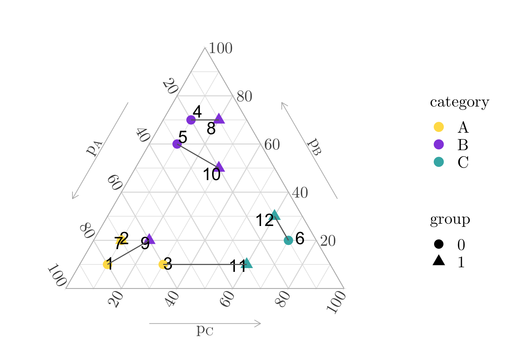

library(tidyverse)8 Transporting a Categorical Variable
Objectives
In this notebook, we illustrate how to perform random matching and matching based on optimal transport for individuals described with a categorical variable (using the distances between the probabilities of being in each category). We use a toy example to make it as simple as possible.
\[ \definecolor{wongBlack}{RGB}{0,0,0} \definecolor{wongGold}{RGB}{230, 159, 0} \definecolor{wongLightBlue}{RGB}{86, 180, 233} \definecolor{wongGreen}{RGB}{0, 158, 115} \definecolor{wongYellow}{RGB}{240, 228, 66} \definecolor{wongBlue}{RGB}{0, 114, 178} \definecolor{wongOrange}{RGB}{213, 94, 0} \definecolor{wongPurple}{RGB}{204, 121, 167} \definecolor{colA}{RGB}{0, 114, 178} \definecolor{colB}{RGB}{213, 94, 0} \definecolor{colC}{RGB}{204, 121, 167} \definecolor{colGpeZero}{RGB}{127, 23, 14} \definecolor{colGpeUn}{RGB}{27, 149, 224} \]
Codes for graphical parameters.
library(extrafont, quietly = TRUE)Registering fonts with RCodes for graphical parameters.
loadfonts(device = "pdf", quiet = TRUE)
# col_categ <- c("A" = "#ffdd55", "B" = "#944edf", "C" = "#3fb3b2")
col_categ <- c("A" = "#56B4E9", "B" = "#D55E00", "C" = "#CC79A7")
font_size <- 20
font_family <- "CMU Serif"
path <- "./figs/"
if (!dir.exists(path)) dir.create(path)
theme_paper <- function(...) {
font_family <- "CMU Serif"
font_size <- 20
theme(
text = element_text(family = font_family, size = unit(font_size, "pt")),
plot.background = element_rect(fill = "transparent", color = NA),
legend.text = element_text(size = rel(1.1)),
legend.title = element_text(size = rel(1.1)),
legend.key = element_blank(),
panel.spacing = unit(1, "lines"),
plot.title = element_text(hjust = 0, size = rel(1.3), face = "bold"),
plot.title.position = "plot",
strip.background = element_rect(fill = NA, colour = NA),
strip.text = element_text(size = rel(1.1))
)
}
theme_ggtern <- function(...) {
font_family <- "CMU Serif"
font_size <- 20
theme(
strip.background = element_rect(colour = "black", fill = NA),
strip.text.x = element_text(colour = "black"),
strip.text = ggtext::element_markdown(),
text = element_text(family = font_family, size = unit(font_size, "pt")),
axis.title = element_text(size = rel(1)),
tern.axis.arrow.show = TRUE,
tern.axis.arrow.sep = .13,
tern.axis.vshift = .05,
panel.border = element_rect(colour = NA)
)
}8.1 Setup
As in the previous pages, assume two groups: 0 and 1. In the first group, there are \(n_0=6\) individuals indexed 1, 2, 3, 4, 5, 6; and in group 1, there are \(n_1=6\) individuals indexed 7, 8, 9, 10, 11, 12. Let \(Y\) denote a response variable that takes values in \(\mathbb{R}\), and let \(X\) be a categorical variable taking values \(\{A,B,C\}\).
Let us assume that we obtained the estimated probabilities of being in each class using a multinomial regression model. This allows to convert categorical observations \(\{x_{1,1},\cdots,x_{1,n_1}\}\) and \(\{x_{0,1},\cdots,x_{0,n_0}\}\) into estimated probabilities, \(\{\boldsymbol{p}_{1,1},\cdots,\boldsymbol{p}_{1,n_1}\}\) and \(\{\boldsymbol{p}_{0,1},\cdots,\boldsymbol{p}_{0,n_0}\}\).
Let us create a toy example:
group_0 <- tribble(
~i, ~x, ~p_A, ~p_B, ~p_C, ~y,
1, "A", .8, .1, .1, 1,
2, "A", .7, .2, .1, 2,
3, "A", .6, .1, .3, 3,
4, "B", .2, .7, .1, 4,
5, "B", .3, .6, .1, 5,
6, "C", .1, .2, .7, 6
)
group_1 <- tribble(
~i, ~x, ~p_A, ~p_B, ~p_C, ~y,
7, "A", .7, .2, .1, 3,
8, "B", .1, .7, .2, 4,
9, "B", .6, .2, .2, 5,
10, "B", .2, .5, .3, 6,
11, "C", .3, .1, .6, 7,
12, "C", .1, .3, .6, 8
)8.2 Random Matching
There are \(6!=720\) different random matching that can be done. We will show two of them below.
8.2.1 First Random Matching
Let us first consider a random matching in which the individuals matched are 1 (group 0) and 12 (group 1), 2 and 9, 3 and 7, 4 and 10, 5 and 8, 6 and 12. We can compute the difference \(y(1) - y(0)\) for each pair of matched individuals (column diff in the table below).
matched_ex_1 <- tribble(
~i_0, ~i_1,
1, 12,
2, 9,
3, 7,
4, 10,
5, 8,
6, 11
) |>
left_join(
group_0 |>
rename_with(~str_c(.x, "_0")),
by = "i_0"
) |>
left_join(
group_1 |>
rename_with(~str_c(.x, "_1")),
by = "i_1"
)
tb_att_1 <-
matched_ex_1 |>
mutate(diff = y_1 - y_0) |>
select(i_0, i_1, diff, x_0, x_1)
tb_att_1# A tibble: 6 × 5
i_0 i_1 diff x_0 x_1
<dbl> <dbl> <dbl> <chr> <chr>
1 1 12 7 A C
2 2 9 3 A B
3 3 7 0 A A
4 4 10 2 B B
5 5 8 -1 B B
6 6 11 1 C C The average treatment on the treated is thus, in that case:
mean(tb_att_1$diff)[1] 2And if we compute the ATT by category of \(X\):
tb_att_1 |> group_by(x_1) |> summarise(ATT = mean(diff))# A tibble: 3 × 2
x_1 ATT
<chr> <dbl>
1 A 0
2 B 1.33
3 C 4 8.2.2 Second Random Matching
We can consider, for the sake of illustration, a second random matching, where the individuals matched are 1 and 8, 2 and 7, 3 and 11, 4 and 10, 5 and 9, 6 and 12. Again, we can compute the difference in outcomes \(y(1)-y(0)\) for each pair of matched individuals.
matched_ex_2 <- tribble(
~i_0, ~i_1,
1, 8,
2, 7,
3, 11,
4, 10,
5, 9,
6, 12
) |>
left_join(
group_0 |>
rename_with(~str_c(.x, "_0")),
by = "i_0"
) |>
left_join(
group_1 |>
rename_with(~str_c(.x, "_1")),
by = "i_1"
)
tb_att_2 <- matched_ex_2 |>
mutate(diff = y_1 - y_0) |>
select(i_0, i_1, diff, x_0, x_1)
tb_att_2# A tibble: 6 × 5
i_0 i_1 diff x_0 x_1
<dbl> <dbl> <dbl> <chr> <chr>
1 1 8 3 A B
2 2 7 1 A A
3 3 11 4 A C
4 4 10 2 B B
5 5 9 0 B B
6 6 12 2 C C The average treatment on the treated is thus, in that case:
mean(tb_att_2$diff)[1] 2And if we compute the ATT by category of \(X\):
tb_att_2 |> group_by(x_1) |> summarise(ATT = mean(diff))# A tibble: 3 × 2
x_1 ATT
<chr> <dbl>
1 A 1
2 B 1.67
3 C 3 8.3 Matching Using the Euclidean Distances Cost Matrix
Let us nw perform optimal matching between individuals from the two groups using Euclidean distances. These distances are computed in the space of centered log-ratio (clr) transformed probability vectors associated with each individual’s membership in one of the classes.
Let us first extract the probability vectors (\(p_A, p_B, p_C\)) from both groups and apply the clr transformation to make them suitable for Euclidean geometry in the compositional space.
library(compositions)
all_coords <- rbind(
as.matrix(group_0[, c("p_A", "p_B", "p_C")]),
as.matrix(group_1[, c("p_A", "p_B", "p_C")])
) |>
clr()Then, we can compute the pairwise Euclidean distances between individuals in group 1 and those in group 0, based on their clr-transformed probability vectors.
row.names(all_coords) <- c(group_0$i, group_1$i)
# Euclidean distances between the clr transform of the propensities
D <- as.matrix(dist(all_coords, method = "euclidean"))
n0 <- nrow(group_0)
n1 <- nrow(group_1)
between_distances <- D[(n0 + 1):(n0 + n1), 1:n0]
round(between_distances, 2) 1 2 3 4 5 6
7 0.63 0.00 1.30 1.77 1.38 2.75
8 2.91 2.42 2.67 0.98 1.30 1.77
9 0.80 0.64 0.79 1.78 1.46 2.16
10 2.27 1.85 1.93 1.06 1.15 1.36
11 1.99 2.09 0.98 2.67 2.53 1.30
12 2.92 2.67 2.21 2.09 2.21 0.41We aim to find the optimal matching between the individuals in group 1 and group 0 based on these distances. Formally, we want to solve the following optimal transport problem: \[ \min_{P\in\mathcal{U}(\boldsymbol{1}_{n_1},\boldsymbol{1}_{n_0})} \langle P,\,C\rangle, \] where \(C:=[C_{i,j}]\) is the cost matrix, with \(C_{ij}\) measuring the cost of matching individual \(i\) from group 1 to individual \(j\) from group 0. Here, we use the Euclidean distance that we juste computed. The total cost is given by \(\langle P, C\rangle=\sum_{i=1}^{n_1}\sum_{j=1}^{n_0}P_{ij}\,C_{ij}\). The set of admissible transport plans is defined as follows: \[ \left\{\,P\in\mathbb{R}_+^{n_1\times n_0}: P\,\mathbf{1}_{n_0}=\frac{\mathbf{1}_{n_1}}{n_1},\ P^\top\mathbf{1}_{n_1}=\frac{\mathbf{1}_{n_0}}{n_0} \right\}. \] We thus have a uniform mass distribution across both groups.
Note
An alternative cost function (which is not used here) is the cross-entropy between two compositional vectors: \[ \begin{equation*} c(\mathbf{x},\mathbf{y})=\log\left(\frac{1}{d}\sum_{i=1}^d\frac{y_i}{x_i}\right)-\frac{1}{d}\sum_{i=1}^d\log\left(\frac{y_i}{x_i}\right), \end{equation*}. \] This corresponds to the “Dirichlet transport” (Baxendale and Wong (2022)). This alternative is considered below, in Section 8.4.
We solve the optimal transport problem using the transport() function from the {transport} package. This function computes the optimal matching plan based on the cost matrix.
# source weights
mass_source <- rep(1 / n1, n1)
# target weights
mass_target <- rep(1 / n0, n0)
# Solve the optimal transport plan
ot_plan <- transport::transport(
a = mass_source, b = mass_target, costm = between_distances,
method = "networkflow"
)
ot_plan$i_0 <- group_0$i[ot_plan$to]
ot_plan$i_1 <- group_1$i[ot_plan$from]
ot_plan from to mass i_0 i_1
1 1 2 0.1666667 2 7
2 2 4 0.1666667 4 8
3 3 1 0.1666667 1 9
4 4 5 0.1666667 5 10
5 5 3 0.1666667 3 11
6 6 6 0.1666667 6 12We can visualize the results in a ternary plot (Figure 8.1). The lines depict the matched individuals (shown by dots and their index).
Codes to create the Figure.
all_data <-
bind_rows(group_0 |> mutate(group = "0"), group_1 |> mutate(group = "1"))
library(ggtern)
p <- ggtern(
data = all_data |>
left_join(
ot_plan |>
mutate(
i_0 = as.numeric(i_0),
i_1 = as.numeric(i_1),
id_match = as.character(row_number())
) |>
dplyr::select(i_0, i_1, id_match) |>
pivot_longer(cols = c(i_0, i_1), values_to = "i") |>
dplyr::select(-name)
),
mapping = aes(x = p_A, y = p_B, z = p_C, group = id_match)
) +
geom_point(mapping = aes(shape = group, colour = x), size = 4) +
geom_text(
mapping = aes(
label = i,
x = p_A + ifelse(group == 0, -1, 1) * 0.05
),
size = .3*font_size
) +
labs(x = "$p_A$", y = "$p_B$", z = "$p_C") +
geom_line(
colour = "gray40",
# mapping = aes(linetype = id_match)
) +
scale_colour_manual(name = "category", values = col_categ) +
scale_shape_discrete(name = "group") +
theme_light(base_size = font_size, base_family = font_family) +
# theme_paper() +
theme_ggtern() +
theme(
legend.title = element_text(size = .8*font_size),
legend.text = element_text(size = .8*font_size)
) +
theme_latex(TRUE) +
theme_hidetitles()
p

Codes to export the figure in PDF.
filename <- "ternary-toy"
ggsave(
p, file = str_c(path, filename, ".pdf"),
height = 2.2*1.75, width = 4*1.75,
family = font_family,
device = cairo_pdf
)
# Crop PDF
system(paste0("pdfcrop ", path, filename, ".pdf ", path, filename, ".pdf"))We can compute the differences \(y(1)-y(0)\) for each matched individuals.
ot_plan_diff <-
ot_plan |>
left_join(group_0 |> select(i_0 = i, y_0 = y, x_0 = x), by = "i_0") |>
left_join(group_1 |> select(i_1 = i, y_1 = y, x_1 = x), by = "i_1") |>
mutate(diff = y_1 - y_0) |>
select(i_0, i_1, diff, x_0, x_1)
ot_plan_diff i_0 i_1 diff x_0 x_1
1 2 7 1 A A
2 4 8 0 B B
3 1 9 4 A B
4 5 10 1 B B
5 3 11 4 A C
6 6 12 2 C CResulting in an ATT of:
mean(ot_plan_diff$diff)[1] 2And if we compute the ATT by category of \(X\):
ot_plan_diff |> group_by(x_1) |> summarise(ATT = mean(diff))# A tibble: 3 × 2
x_1 ATT
<chr> <dbl>
1 A 1
2 B 1.67
3 C 3 8.4 Matching Using the Cross-Entropy Cost Matrix
In Section 8.3, we used the Euclidean distance of the clr-transformed vector of probabilities as the cost function to solve the optimal transport problem. Here, we consider an alternative cost function, the cross-entreopy: \[ c(\mathbf{x}, \mathbf{y}) = \log\left(\frac{1}{d} \sum_{i=1}^d \frac{y_i}{x_i}\right) - \frac{1}{d} \sum_{i=1}^d \log\left(\frac{y_i}{x_i}\right). \]
We first extract the probability vectors for the individuals from both groups (without clr transform), and we make sure there is no probability equal to 0.
p0 <- as.matrix(group_0[, c("p_A", "p_B", "p_C")])
p1 <- as.matrix(group_1[, c("p_A", "p_B", "p_C")])
p0 <- pmax(p0, 1e-10)
p1 <- pmax(p1, 1e-10)Let us define the cross-entropy cost function:
cross_entropy_cost <- function(x, y) {
d <- length(x)
log(mean(y / x)) - mean(log(y / x))
}We can then compute the pairwise cost matrix (group1 rows vs group0 columns).
between_distances_ce <- outer(
1:nrow(p1), 1:nrow(p0),
Vectorize(function(i, j) cross_entropy_cost(p1[i, ], p0[j, ]))
)
round(between_distances_ce, 4) [,1] [,2] [,3] [,4] [,5] [,6]
[1,] 0.0598 0.0000 0.2894 0.4670 0.3057 0.9985
[2,] 1.2447 0.9537 0.8514 0.1542 0.2894 0.4670
[3,] 0.1149 0.0619 0.0959 0.5474 0.3836 0.6215
[4,] 0.8534 0.5984 0.5067 0.1610 0.1813 0.3289
[5,] 0.5154 0.4892 0.1542 1.0435 0.8708 0.2379
[6,] 1.3118 1.0435 0.8232 0.4892 0.5436 0.0266Then, we can solde the optimal transport problem.
ot_plan_ce <- transport::transport(
a = mass_source,
b = mass_target,
costm = between_distances_ce,
method = "networkflow"
)
ot_plan_ce$i_0 <- group_0$i[ot_plan_ce$to]
ot_plan_ce$i_1 <- group_1$i[ot_plan_ce$from]
ot_plan_ce from to mass i_0 i_1
1 1 2 0.1666667 2 7
2 2 4 0.1666667 4 8
3 3 1 0.1666667 1 9
4 4 5 0.1666667 5 10
5 5 3 0.1666667 3 11
6 6 6 0.1666667 6 12We can compute the differences \(y(1)-y(0)\) for each matched individuals.
ot_plan_ce_diff <-
ot_plan_ce |>
left_join(group_0 |> select(i_0 = i, y_0 = y, x_0 = x), by = "i_0") |>
left_join(group_1 |> select(i_1 = i, y_1 = y, x_1 = x), by = "i_1") |>
mutate(diff = y_1 - y_0) |>
select(i_0, i_1, diff, x_0, x_1)
ot_plan_ce_diff i_0 i_1 diff x_0 x_1
1 2 7 1 A A
2 4 8 0 B B
3 1 9 4 A B
4 5 10 1 B B
5 3 11 4 A C
6 6 12 2 C CResulting in an ATT of:
mean(ot_plan_ce_diff$diff)[1] 2And if we compute the ATT by category of \(X\):
ot_plan_ce_diff |> group_by(x_1) |> summarise(ATT = mean(diff))# A tibble: 3 × 2
x_1 ATT
<chr> <dbl>
1 A 1
2 B 1.67
3 C 3